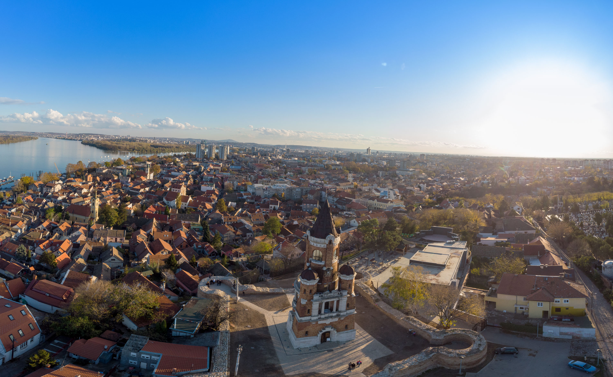
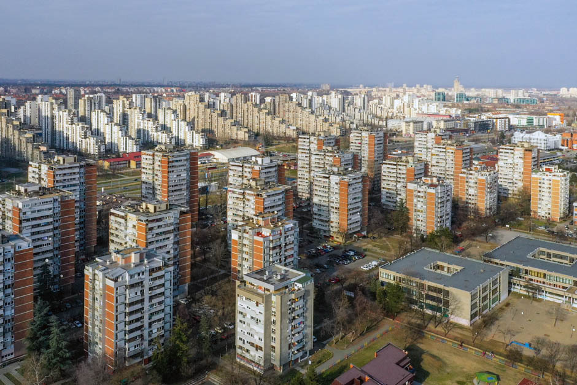
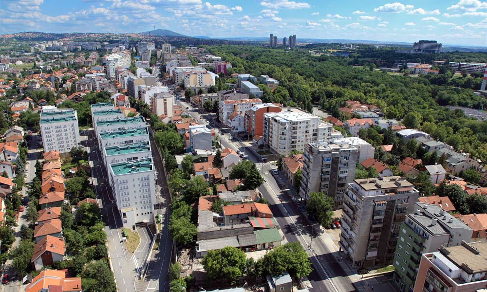
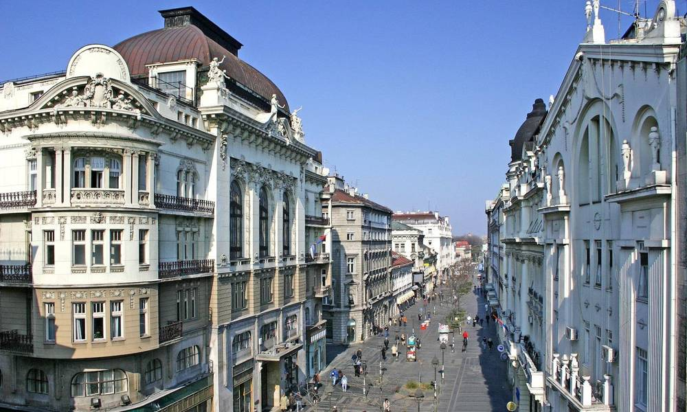
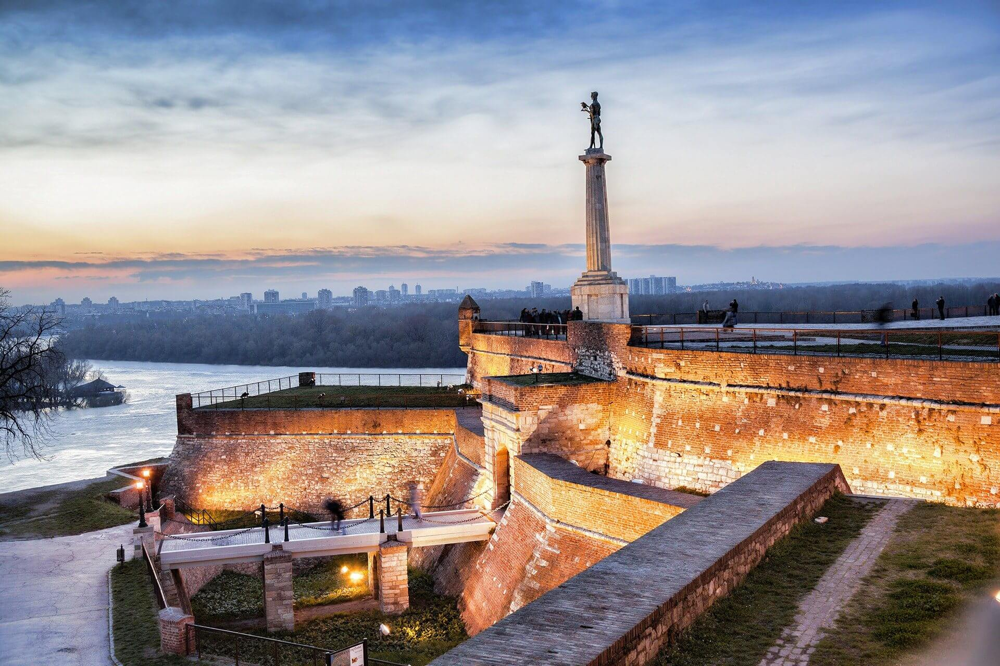
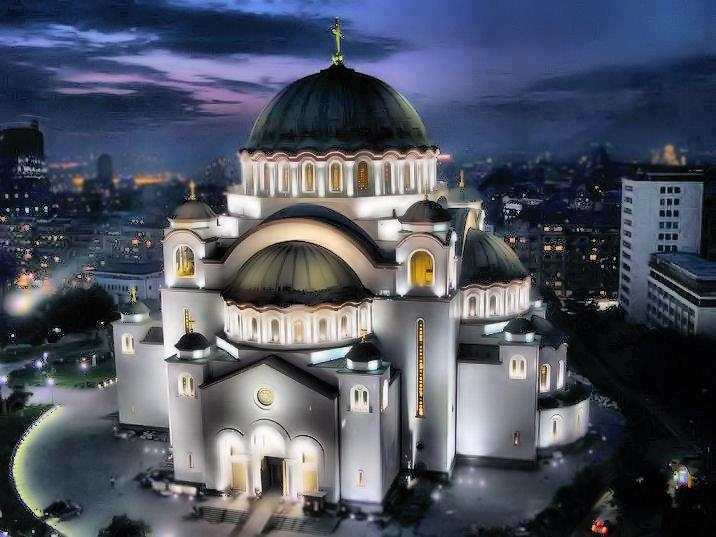

Zemun is a town in the southeastern part of Srem, on the right bank of the Danube, not far from the mouth of the Sava. Territorially, historically, politically, culturally, economically and traffic-wise, it is connected to Belgrade, of which it has been a part since 1934. According to the 2011 census, Zemun had 157,367 inhabitants (according to the 1991 census, there were 141,997 inhabitants, in 2002 there were 145,751 inhabitants).

New Belgrade 𝐢𝐬 𝐥𝐨𝐜𝐚𝐭𝐞𝐝 𝐨𝐧 𝐭𝐡𝐞 𝐥𝐞𝐟𝐭 𝐛𝐚𝐧𝐤 𝐨𝐟 𝐭𝐡𝐞 𝐒𝐚𝐯𝐚. 𝐀𝐝𝐦𝐢𝐧𝐢𝐬𝐭𝐫𝐚𝐭𝐢𝐯𝐞𝐥𝐲, 𝐢𝐭𝐬 𝐧𝐨𝐫𝐭𝐡𝐞𝐚𝐬𝐭𝐞𝐫𝐧 𝐩𝐚𝐫𝐭 𝐛𝐞𝐠𝐢𝐧𝐬 𝐨𝐧 𝐭𝐡𝐞 𝐫𝐢𝐠𝐡𝐭 𝐬𝐢𝐝𝐞 𝐨𝐟 𝐭𝐡𝐞 𝐃𝐚𝐧𝐮𝐛𝐞, 𝐣𝐮𝐬𝐭 𝐛𝐞𝐟𝐨𝐫𝐞 𝐭𝐡𝐞 𝐜𝐨𝐧𝐟𝐥𝐮𝐞𝐧𝐜𝐞 𝐨𝐟 𝐭𝐡𝐞 𝐒𝐚𝐯𝐚 𝐚𝐧𝐝 𝐭𝐡𝐞 𝐃𝐚𝐧𝐮𝐛𝐞. 𝐈𝐭 𝐢𝐬 𝐥𝐨𝐜𝐚𝐭𝐞𝐝 𝐧𝐨𝐫𝐭𝐡𝐰𝐞𝐬𝐭 𝐨𝐟 "𝐨𝐥𝐝" 𝐁𝐞𝐥𝐠𝐫𝐚𝐝𝐞, 𝐰𝐢𝐭𝐡 𝐰𝐡𝐢𝐜𝐡 𝐢𝐭 𝐢𝐬 𝐜𝐨𝐧𝐧𝐞𝐜𝐭𝐞𝐝 𝐛𝐲 𝟔 𝐛𝐫𝐢𝐝𝐠𝐞𝐬 (𝐁𝐫𝐚𝐧𝐤𝐨'𝐬 𝐁𝐫𝐢𝐝𝐠𝐞, 𝐆𝐚𝐳𝐞𝐥𝐚, 𝐎𝐥𝐝 𝐒𝐚𝐯𝐚 𝐁𝐫𝐢𝐝𝐠𝐞, 𝐎𝐥𝐝, 𝐍𝐞𝐰 𝐑𝐚𝐢𝐥𝐰𝐚𝐲 𝐁𝐫𝐢𝐝𝐠𝐞 𝐚𝐧𝐝 𝐀𝐝𝐚 𝐁𝐫𝐢𝐝𝐠𝐞). 𝐓𝐡𝐞 𝐄𝐮𝐫𝐨𝐩𝐞𝐚𝐧 𝐫𝐨𝐚𝐝 𝐄-𝟕𝟓 𝐩𝐚𝐬𝐬𝐞𝐬 𝐭𝐡𝐫𝐨𝐮𝐠𝐡 𝐭𝐡𝐞 𝐜𝐞𝐧𝐭𝐞𝐫 𝐨𝐟 𝐍𝐞𝐰 𝐁𝐞𝐥𝐠𝐫𝐚𝐝𝐞.
𝐆𝐞𝐨𝐠𝐫𝐚𝐩𝐡𝐢𝐜𝐚𝐥 𝐟𝐞𝐚𝐭𝐮𝐫𝐞𝐬

The municipality of Voždovac is a Belgrade municipality. It occupies an area of 14,864 ha, on which about 167,000 inhabitants live. The place of today's municipality of Voždovac is the place from which the leader Karađorđe led his insurgents and in 1806 liberated Belgrade from the Turks for the first time. In memory of that event, this area was called Voždovo predgrađe, and later it was named Voždovac. After the Second World War, the municipality was called the VI region, and in 1956 it was formed by merging the then municipalities of Lekino brdo and Voždovac.
Some of the pictures of Belgrade

Click on image above
Knez Mihailova Street
Knez Mihailova Street is a pedestrian zone, shopping center and street legally protected as one of the oldest and most valuable city monuments, with a series of representative buildings and civic houses created in the late 70s of the 19th century. It is believed that in the time of the Romans, the center of the settlement was Singidunum, and in the time of the Turks, the streets with gardens, fountains and mosques were winding in this area. In the middle of the 19th century, the garden of Prince Aleksandar Karađorđević was here in the upper part. After the development of the regulation plan of Belgrade, which was made by Emilijan Josimović in 1867, the street was quickly built and got its physiognomy and content. Houses are being built in it and the most influential and richest families of commercial and political Belgrade are being settled. In 1870, the city administration officially christened the street, giving it the name - Kneza Mihaila Street.

Kalemegdan
Kalemegdan is the largest park in Belgrade. At the same time, it is the most important cultural and historical complex, dominated by the Belgrade Fortress above the confluence of the Sava and the Danube. The name Kalemegdan refers only to the spatial plateau around the fortress, which was turned into a park in the 1980s. While the fortress was the main military stronghold of Belgrade, the plateau served to look at the enemy and wait for the fight. Its name comes from the Turkish words kale ("fortress") and mejdan ("battlefield"). The Turks also called Kalemegdan Fićir-bajir, which means "hill for thinking".

The Saint Sava Temple
From whichever direction you approach the capital of Serbia, there’s one edifice you won’t be able to miss. The Church of Saint Sava is the not only the largest Serbian Orthodox church, it is the largest Orthodox place of worship in the Balkans and one of the largest Orthodox churches in the world. Its total height reaches 82 m with the dome being 70 m high and the main gold plated cross giving it an additional 12 m height. There are more than 49 bells in the bell towers and over 18 gold plated crosses on the its domes.
Today, the Temple of Saint Sava holds a special place in the hearts of Belgraders. It is a gathering spot, a safe refuge and an important place of support for all those in need. In between its walls the residents of Serbia’s capital share their joy and their sorrow, and celebrating important holidays in front of it has become a tradition a long time ago. One of the largest gatherings in front of the Temple is that on Christmas Eve. Thousands of believers gather around a huge open-air hearth where the "badnjak" is set on fire. That is how the midnight liturgy and Christmas are celebrated each year with an air tremendous joy and excitement. Another spectacular event is the Orthodox New Year celebration when Serbs welcome the new year with phenomenal fireworks, music, dancing and laughter.
